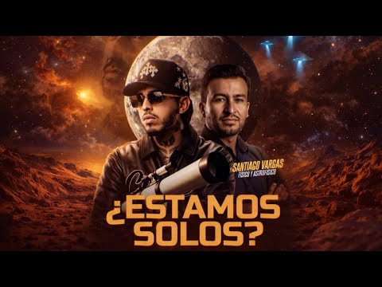
Westcol
Una conversación sobre física, astrofísica y exploración espacial.
Ver la entrevista ↗ENTREVISTAS Y MATERIAL AUDIOVISUAL
Encuentros con periodistas, creadores y medios para hablar del Sol, la exploración espacial y el lugar de la humanidad en el universo.

Una conversación sobre física, astrofísica y exploración espacial.
Ver la entrevista ↗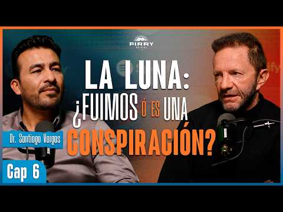
Más allá de la conspiración: la realidad del viaje a la Luna.
Ver la entrevista ↗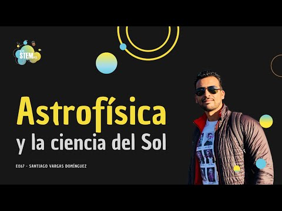
Astrofísica, heliofísica y comunicación científica.
Ver la entrevista ↗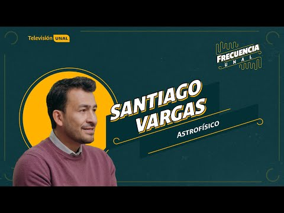
Del Planetario a las Estrellas · capítulo 4, temporada 2.
Ver la entrevista ↗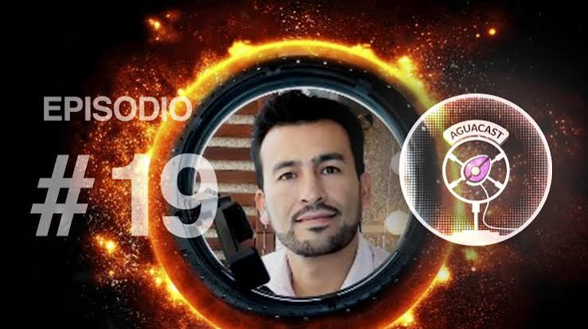
Una conversación sobre el Sol, la divulgación y la astronomía para la paz.
Ver la entrevista ↗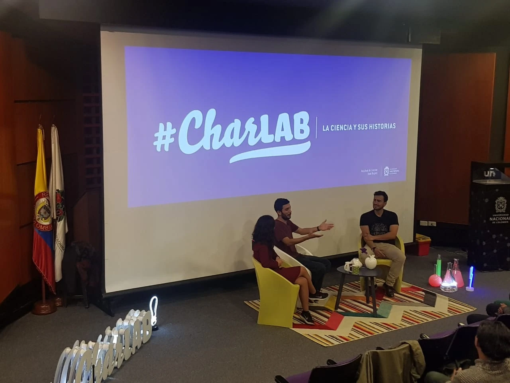
Santiago Vargas: un colombiano que brilla junto al Sol.
Ver la entrevista ↗Frecuencia UNAL también está disponible en Televisión UNAL en Facebook ↗.
VIDEOS, TIKTOKS Y MATERIAL AUDIOVISUAL
Su divulgación reúne videos, transmisiones en directo, series web y formatos breves para redes sociales, incluidos TikToks. Explora formas de contar la ciencia que conecten con distintas edades y hábitos de consumo.
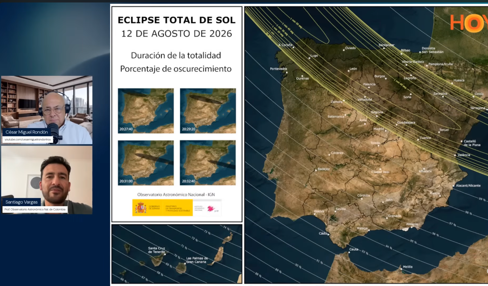
Transmisión del eclipse solar con César Miguel Rondón.
Ver video ↗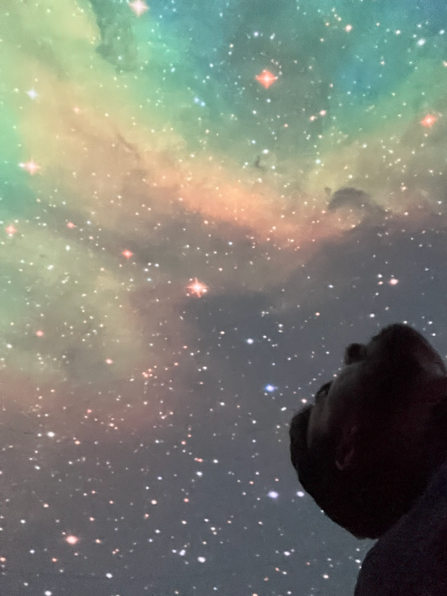
Conversación sobre Interestelar en CinemaBeto Podcast.
Ver video ↗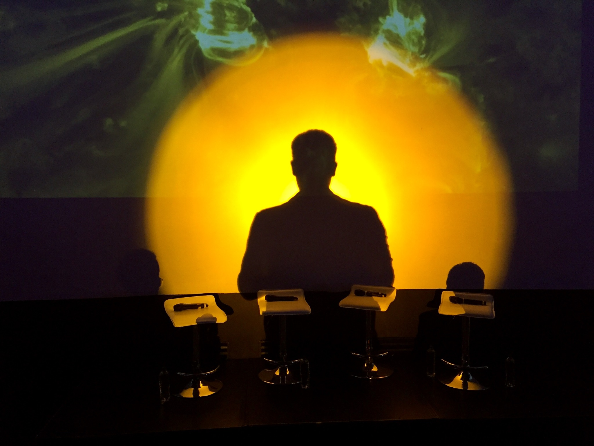
Conversación sobre actividad solar en En Conexión.
Ver video ↗Fotografías del archivo personal utilizadas como imágenes alusivas.
Santiago Vargas participa en esta serie web de divulgación de Televisión UNAL, en la que un joven curioso encuentra en la ciencia respuestas a situaciones cotidianas. El humor y las conversaciones con profesores de distintas disciplinas acercan preguntas complejas a los públicos de las redes sociales. La producción fue nominada a los premios TAL 2019.
El universo de la serie se amplía en el podcast La venganza de los polinomios. Allí, Santiago conversa sobre exploración de Marte y sobre las tecnologías que permiten descubrir el universo.
Ver los episodios de la serie ↗
ARCHIVO DE MEDIOS
Entrevistas, participaciones y notas con enlaces registrados en su archivo personal.
57 registros
2026 · Westcol
2026 · Noticias UNO
2026 · La Luciernaga
2026 · El Tiempo
2026 · Programa Gladys Rodriguez
2026 · Cesar Miguel Rondón
2026 · El Tiempo
2026 · Ciencia Viral
2026 · Globovisión
2026 · Cesar Miguel Rondón
2026 · Los Informantes
2026 · Television UNAL - El Tiempo
2026 · El nuevo siglo
2025 · CinemaBeto Podcast
2025 · En Conexión, con Cesar Miguel Rondón
2025 · Analisis UN
2025 · En Conexión, con Cesar Miguel Rondón
2025 · En Conexión, con Cesar Miguel Rondón
2025 · En Conexión, con Cesar Miguel Rondón
2025 · UN Televisión
2025 · UN Televisión
2025 · En Conexión, con Cesar Miguel Rondón
2024 · Date un Vlog
2024 · El Tiempo
2024 · RTVC
2024 · El Tiempo
2024 · Cesar Rondon
2024 · El Tiempo
2024 · En Conexión, con Cesar Miguel Rondón
2024 · El Heraldo
2023 · El Tiempo
2023 · El Heraldo
2023 · UN Medios
2023 · Caracol Noticias
2023 · Agencia de Noticias
2023 · Agencia de Noticias
2023 · El Tiempo
2023 · Ciencia Viral
2023 · Ciencia Viral
2023 · El Tiempo
2022 · Agencia de Noticias
2022 · Mundo Union Radio Venezuela
2022 · EpiSTEM
2022 · En Conexión Miami
2022 · El Heraldo
2022 · En Conexión, con Cesar Miguel Rondón
2022 · Noticias Caracol
2022 · El Tiempo
2022 · En Conexión Miami
2022 · UN Analisis
2022 · Colombia Check
2021 · Punto Crítico
2021 · El Tiempo
2021 · Grey Cube Projects
2021 · TVV Miami
2020 · Revista Persea
2019 · Punto Crítico
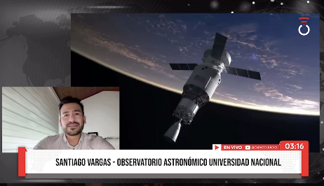
Conversación sobre las misiones Artemis.
Consultar ↗La actividad solar y sus conexiones con el entorno terrestre.
Consultar ↗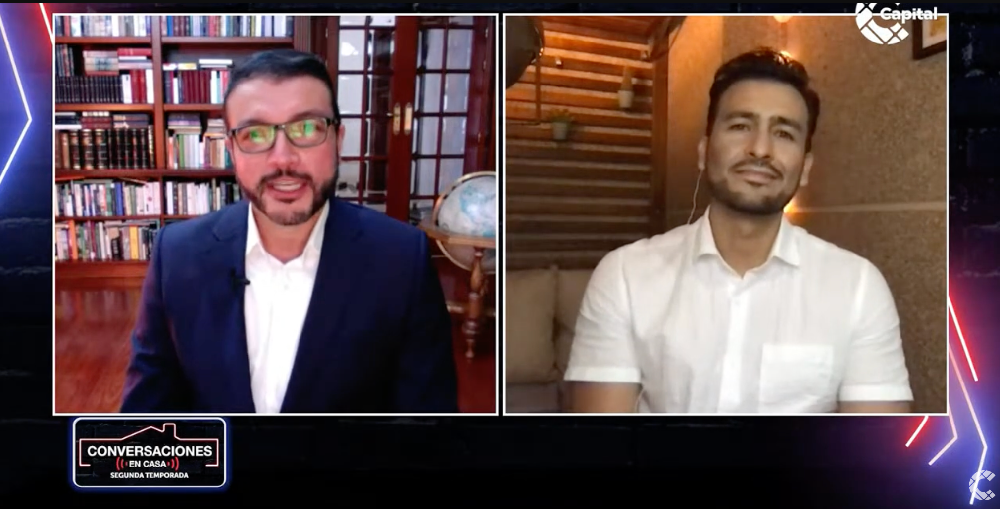
Con Camilo Prieto, sobre los secretos del universo.
Consultar ↗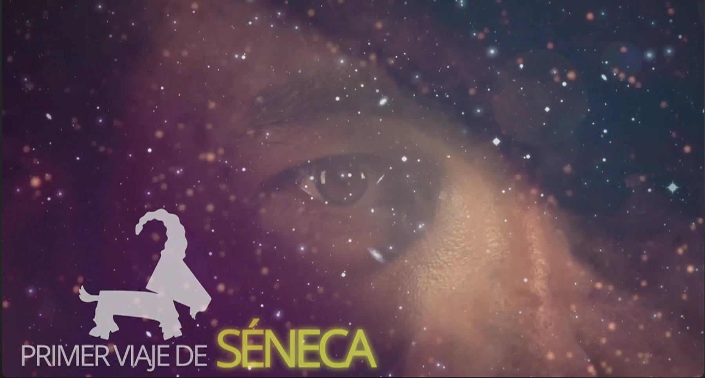
Una conversación sobre su trayectoria y la comunicación de la ciencia.
Consultar ↗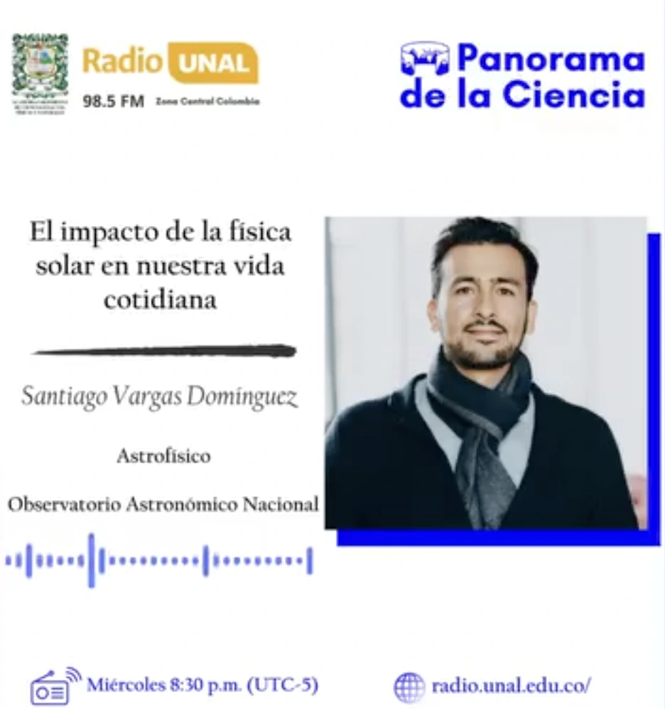
Entrevista de la Academia Colombiana de Ciencias Exactas, Físicas y Naturales.
Consultar ↗Videos breves junto a Televisión UNAL para compartir ciencia y despertar nuevas preguntas.
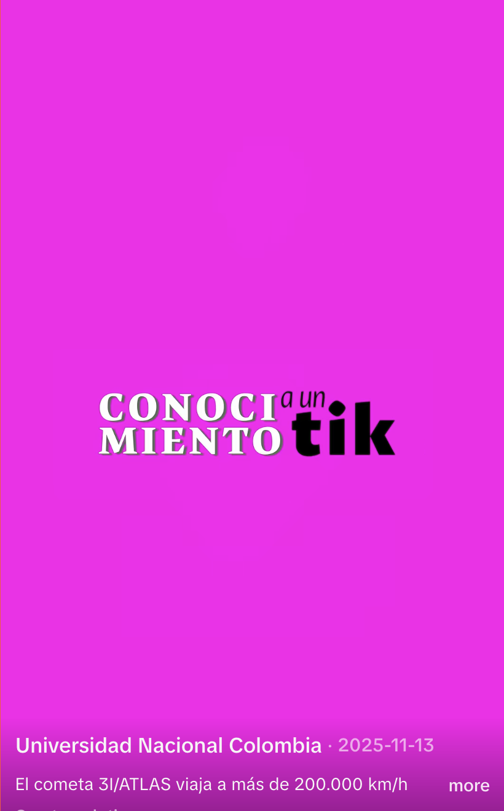
Conocimiento a un Tik · Televisión UNAL. Video nominado al Premio India Catalina 2026 en la categoría «Mejor corto o short vertical».
Consultar ↗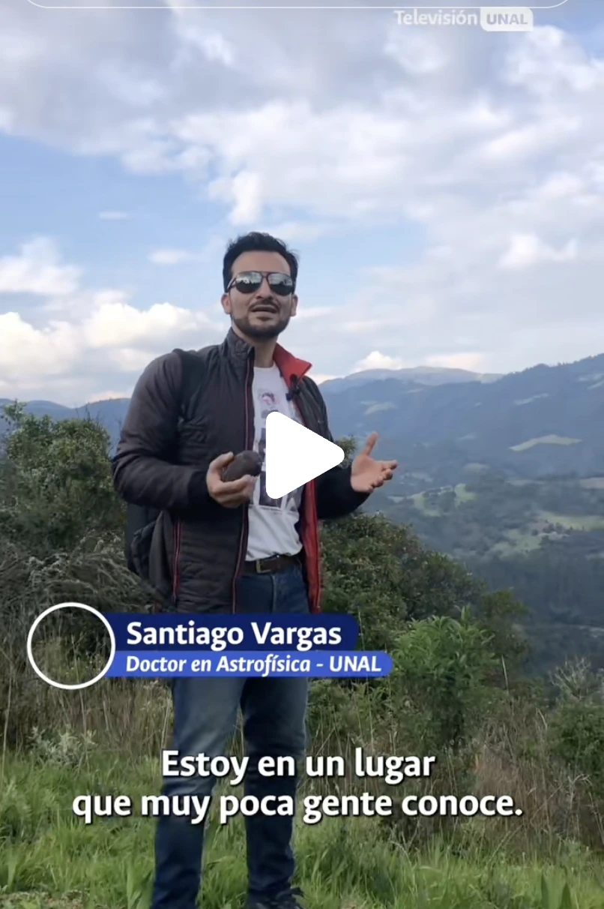
Una historia de patrimonio científico y visitantes del espacio, en formato breve.
Consultar ↗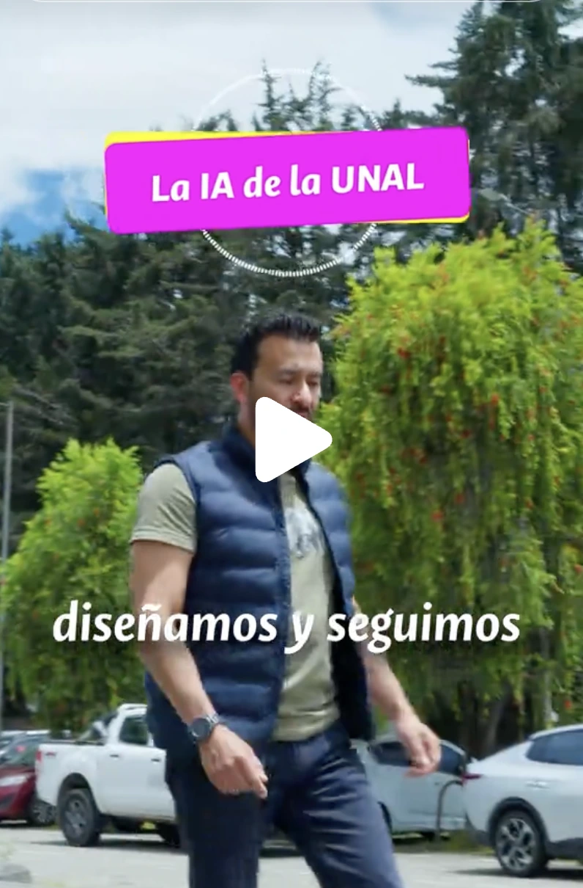
Tecnología e investigación universitaria en un nuevo episodio para redes.
Consultar ↗